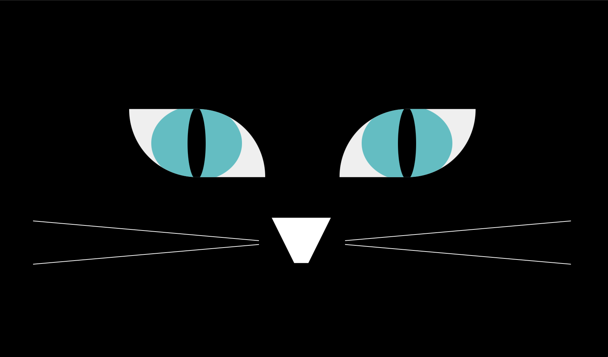
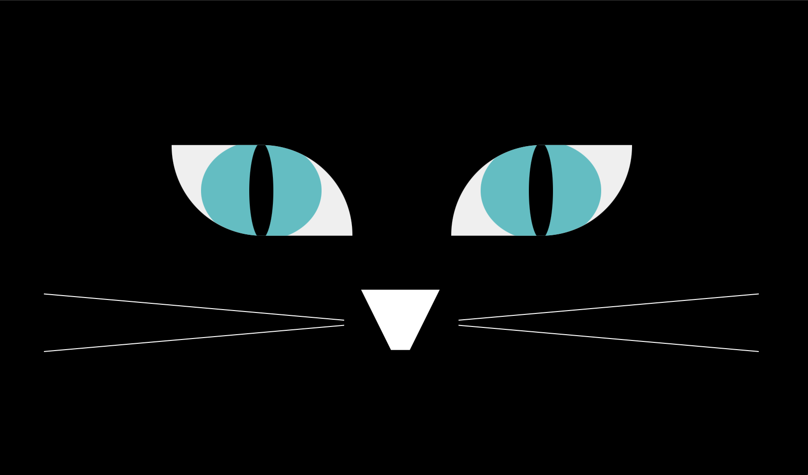

Eyes
Find it on Github

A fun, quick adventure through CSS. Cat eyes are always watching: move the mouse to see the cat stalk it's prey. (Yes, it's a pun.) Built on the foundation of a project for MITxPro, the functionality got a style upgrade. Mainly: working with the border radius to create intense angles where there was only round edges. The biggest challenge was figuring out how to keep functionality AND have the eyes styled to look like mirrored images. Mirroring or flipping the shape drastically effected how the eyes behaved in relation to the mouse. So both eyes are independent of each other, styled seperately.
This was super fun to mess around with. Definitely would love to learn more about CSS.
CSS
JavaScript

A fun, quick adventure through CSS. Cat eyes are always watching: move the mouse to see the cat stalk it's prey. (Yes, it's a pun.) Built on the foundation of a project for MITxPro, the functionality got a style upgrade. Mainly: working with the border radius to create intense angles where there was only round edges. The biggest challenge was figuring out how to keep functionality AND have the eyes styled to look like mirrored images. Mirroring or flipping the shape drastically effected how the eyes behaved in relation to the mouse. So both eyes are independent of each other, styled seperately.
This was super fun to mess around with. Definitely would love to learn more about CSS.
Languages:
HTMLCSS
JavaScript
Issues:
- window resze cuases the eyes and bottom face of face to skew away from each other
No other planned updates.